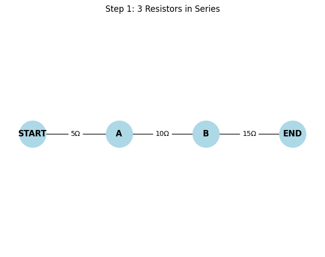
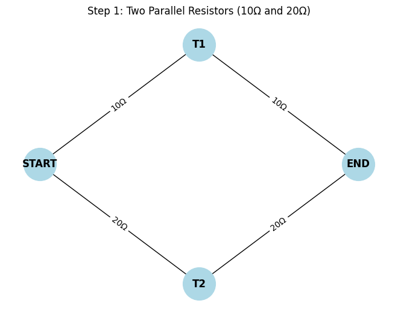

Problem 1
Overview of the Solution
We'll:
1) Model the circuit as a weighted undirected graph.
2) Use graph traversal and simplification techniques to reduce the circuit iteratively:
-
Combine series resistors (linear chains).
-
Combine parallel resistors (multi-edges or cycles between the same nodes).
3) Return the final equivalent resistance between two terminals (e.g., source and sink nodes).
Algorithm Outline
Key Ideas:
-
Series Detection: If a node has exactly 2 connections and is not a terminal, combine the two edges.
-
Parallel Detection: Multiple edges between the same pair of nodes are reduced using the parallel resistance rule:
🔷 Series Resistors
All resistors are connected end-to-end. The total resistance is:
Properties:
-
Current is the same through all.
-
Voltage is divided across resistors.
import networkx as nx
import matplotlib.pyplot as plt
def draw_series_circuit(G, step, title):
pos = {
"START": (0, 0),
"A": (1, 0),
"B": (2, 0),
"END": (3, 0)
}
if "B" not in G.nodes:
pos.pop("B")
if "A" not in G.nodes:
pos.pop("A")
labels = nx.get_edge_attributes(G, 'resistance')
nx.draw(G, pos, with_labels=True, node_size=1500, node_color="lightblue", font_weight='bold')
nx.draw_networkx_edge_labels(G, pos, edge_labels=labels)
plt.title(title)
plt.axis("off")
plt.savefig(f"series_step_{step}.png")
plt.show()
plt.clf()
# Step 1: Initial full series
G = nx.Graph()
G.add_edge("START", "A", resistance="5Ω")
G.add_edge("A", "B", resistance="10Ω")
G.add_edge("B", "END", resistance="15Ω")
draw_series_circuit(G, 1, "Step 1: 3 Resistors in Series")
# Step 2: Combine A-B and B-END to one 25Ω
G.remove_node("B")
G.add_edge("A", "END", resistance="25Ω")
draw_series_circuit(G, 2, "Step 2: 10Ω + 15Ω = 25Ω")
# Step 3: Combine all into 30Ω
G.remove_node("A")
G.add_edge("START", "END", resistance="30Ω")
draw_series_circuit(G, 3, "Step 3: 5Ω + 25Ω = 30Ω")

The solution:
Step 1 - Initial Circuit
-
Three resistors connected in series
-
No simplification yet
-
Expression: 5Ω + 10Ω + 15Ω
Step 2 – Combine 10Ω and 15Ω
-
Middle two resistors combined
-
Calculation: 10Ω + 15Ω = 25Ω
Step 3 – Combine 5Ω and 25Ω
-
Final combination of the entire series
-
Calculation: 5Ω + 25Ω = 30Ω
✅ Final Result:
🔶 Parallel Resistors
Formula:
Shortcut for two resistors:
Explanation:
-
All resistors are connected between the same two nodes.
-
The voltage is the same across each resistor.
-
The current splits among the parallel branches.
import networkx as nx
import matplotlib.pyplot as plt
def draw_parallel_single_nodes(step, title, edges, save_name):
pos = {
"START": (0, 0),
"END": (3, 0),
"T1": (1.5, 1),
"T2": (1.5, -1),
}
G = nx.Graph()
for u, v, r in edges:
G.add_edge(u, v, resistance=r)
labels = nx.get_edge_attributes(G, 'resistance')
nx.draw(G, pos, with_labels=True, node_size=1500, node_color="lightblue", font_weight='bold')
nx.draw_networkx_edge_labels(G, pos, edge_labels=labels)
plt.title(title)
plt.axis("off")
plt.savefig(save_name)
plt.show()
plt.clf()
# Step 1 – show two parallel resistors (10Ω and 20Ω) between START and END
edges_step1 = [
("START", "T1", "10Ω"),
("T1", "END", "10Ω"),
("START", "T2", "20Ω"),
("T2", "END", "20Ω"),
]
draw_parallel_single_nodes(1, "Step 1: Two Parallel Resistors (10Ω and 20Ω)", edges_step1, "parallel_step1.png")
# Step 2 – replace with a single equivalent resistor (6.67Ω)
edges_step2 = [
("START", "END", "6.67Ω"),
]
draw_parallel_single_nodes(2, "Step 2: Equivalent Resistance = 6.67Ω", edges_step2, "parallel_step2.png")

The solution:
Step 1:
Two separate paths: START → T1 → END (10Ω) START → T2 → END (20Ω)
Clearly visible top and bottom resistors
Step 2:
A single edge: START → END with 6.67Ω
Efficiency & Improvements
Complexity:
-
Parallel reduction: O(E) per iteration
-
Series detection: O(N) per iteration
-
Total iterations: ≤ N (number of nodes)
Improvements:
-
Use union-find to track components.
-
Optimize detection of series/parallel structures with pattern matching.
-
Integrate Kirchhoff’s laws + Laplacian matrix method (graph-theoretic method using Y-Δ transforms and node-voltage analysis).
Final Thoughts
This approach is systematic and generalizable. It:
-
Uses graph theory to model physical systems.
-
Supports automation and scalability for complex networks.
-
Bridges mathematical theory and engineering practice.